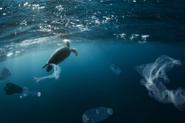
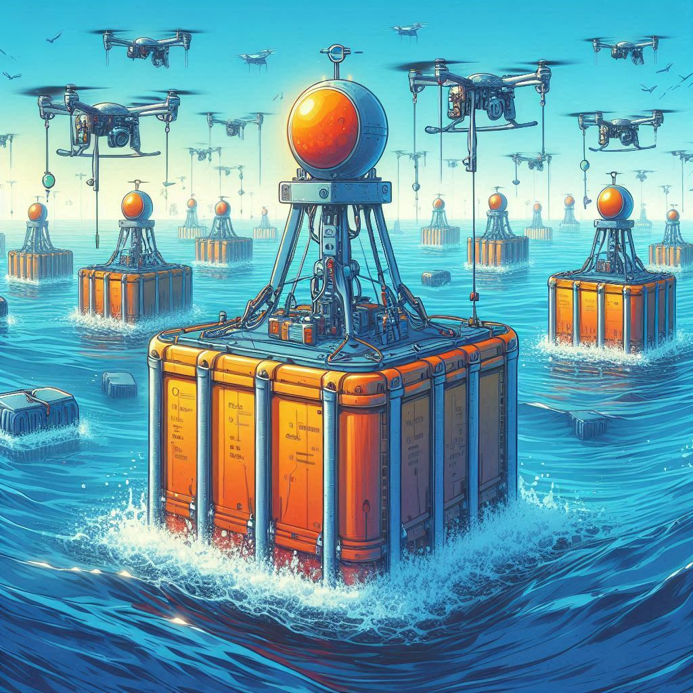
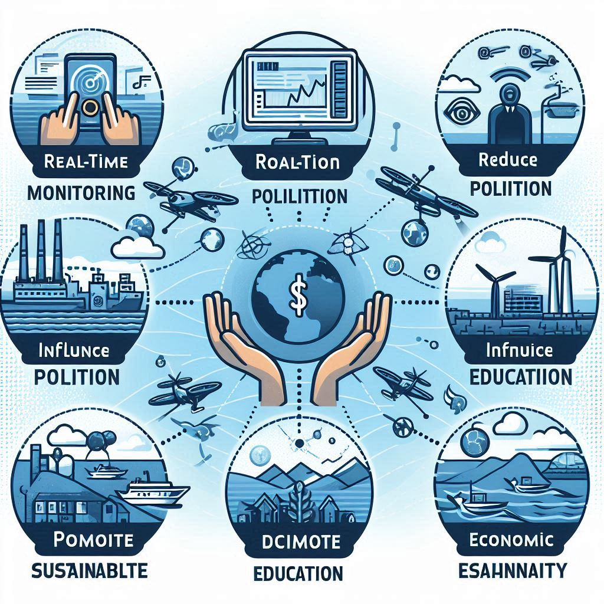
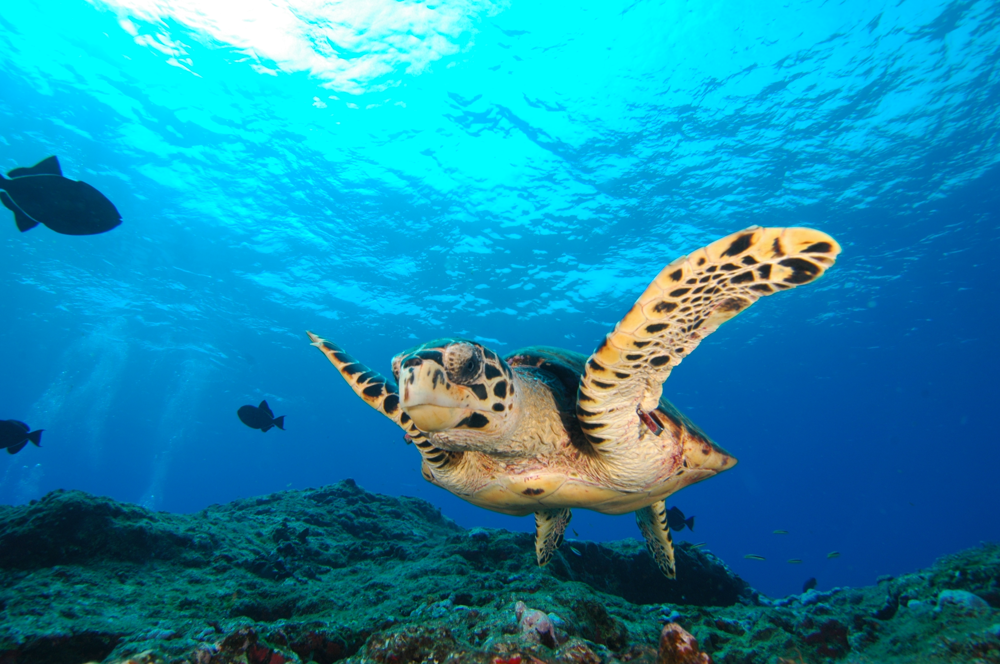

O Desafio dos Oceanos
 Os oceanos estão enfrentando problemas críticos, como a poluição plástica, a destruição de habitats marinhos, as mudanças climáticas e a pesca insustentável. Esses problemas não apenas afetam a vida marinha, mas também impactam a saúde humana, a economia e a biodiversidade global. É essencial agir agora para proteger nossos oceanos e garantir um futuro sustentável para as próximas gerações.Tecnologia Inovadora para Salvar os Oceanos
 Nossa solução CARONTE combina várias tecnologias avançadas para monitorar e proteger os oceanos: Boias CARONTE: Equipadas com sensores que monitoram em tempo real parâmetros como temperatura da água, níveis de pH, concentração de plásticos e produtos químicos, e biodiversidade. Drones Marítimos: Autossustentáveis e equipados com painéis solares, responsáveis pela coleta de dados e limpeza dos oceanos. Satélites: Complementam o monitoramento, fornecendo dados abrangentes sobre grandes áreas oceânicas. Inteligência Artificial: Processa os dados coletados e gera insights essenciais para a formulação de políticas e práticas sustentáveis.Nossos Objetivos
Monitorar em Tempo Real: Obter dados precisos sobre a saúde dos oceanos para ações imediatas.
Reduzir a Poluição: Utilizar drones para a limpeza contínua dos oceanos.
Influenciar Políticas: Utilizar insights baseados em dados para formular políticas ambientais eficazes.
Promover a Educação: Aumentar a conscientização pública sobre a importância da conservação dos oceanos.
Sustentabilidade Econômica: Apoiar práticas de economia azul sustentável que respeitem os limites ecológicos.
Impacto em Diversos Públicos
Nossa solução beneficiará uma ampla gama de públicos:
Cientistas e Pesquisadores: Proporcionando dados valiosos para estudos e monitoramento ambiental.
Comunidades Costeiras: Protegendo suas fontes de subsistência e promovendo práticas sustentáveis.
Formuladores de Políticas: Oferecendo insights baseados em dados para a criação de políticas ambientais eficazes.
Sociedade em Geral: Aumentando a conscientização e promovendo a educação ambiental para todos.
Benefícios da Solução CARONTE
Melhoria da Saúde dos Oceanos: Redução da poluição e restauração de habitats marinhos.
Dados Precisos: Monitoramento em tempo real para decisões mais informadas.
Economia Sustentável: Apoio a práticas econômicas que respeitam o meio ambiente.
Engajamento Público: Maior conscientização e participação da sociedade civil na conservação dos oceanos.
Inovações Tecnológicas: Utilização de tecnologias avançadas para resolver problemas ambientais complexos.
Impacto no Cotidiano
Nossa solução CARONTE transforma dados complexos em informações acessíveis que podem ser utilizadas por diversas pessoas no seu dia a dia:
Cidadãos Conscientes: Acesso a informações sobre a saúde dos oceanos e como podem ajudar.
Educadores: Ferramentas para ensinar sobre conservação marinha e sustentabilidade.
Pescadores e Empresários: Dados para otimizar práticas de pesca e negócios sustentáveis.
Governos e ONGs: Informações para formular e implementar políticas ambientais eficazes.